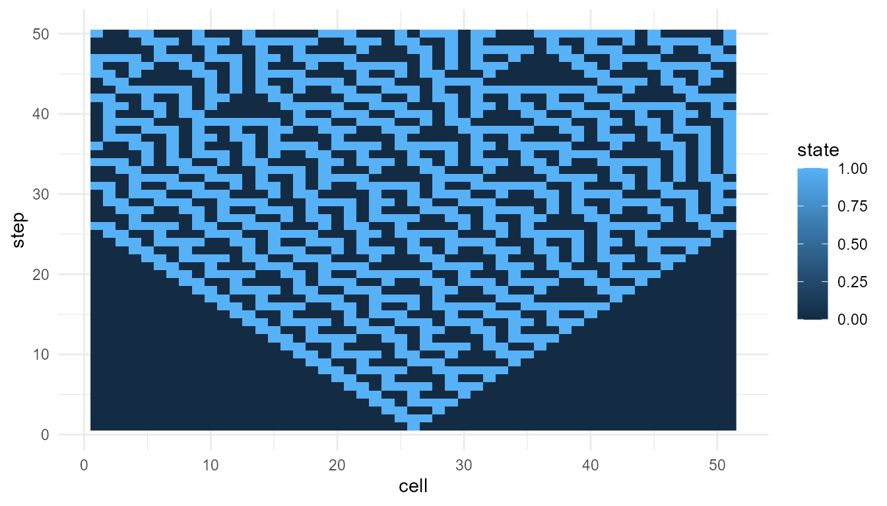
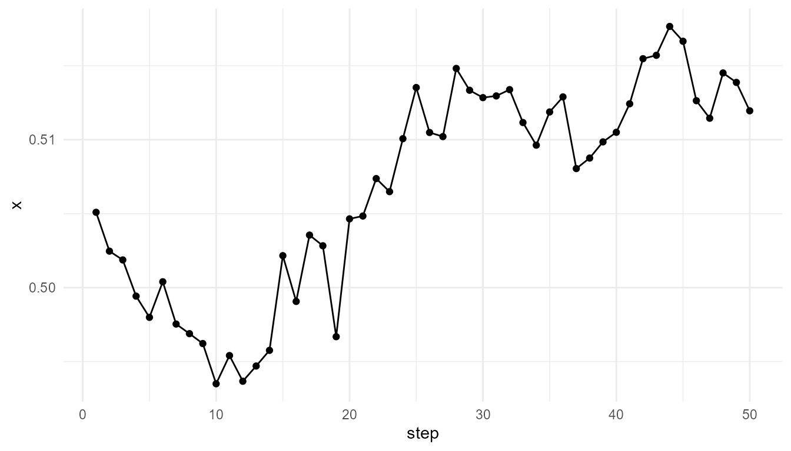

Overview
emergenceModelR is an educational R package for
exploring emergence, self-organization, complexity, agent interactions,
cellular automata, and network growth.
The package is designed for teaching, conceptual exploration, science communication, and portfolio development. It focuses on clarity rather than realism.
The central idea is:
System-level patterns can arise from local rules, interactions, feedback, and repeated updating.
The simulations in this package are toy models. They do not fully represent real biological, social, cognitive, or physical systems. Their purpose is to make the logic of emergence visible and testable.
What the package helps you explore
emergenceModelR includes several families of models:
| Model family | Main question | Core function |
|---|---|---|
| Cellular automata | How can local rules generate global patterns? | simulate_cellular_automata() |
| Self-organization | How can feedback and diffusion create spatial order? | simulate_self_organization() |
| Agent interactions | How can individual behavior produce collective dynamics? | simulate_agent_interactions() |
| Network growth | How can local attachment rules generate network structure? | simulate_network_growth() |
| Emergence metrics | How can model outputs be summarized? | measure_emergence() |
| Visualization | How can simulation outputs be plotted? | plot_emergence_sim() |
First example: cellular automata
Cellular automata are a clear starting point because they show how simple local update rules can generate complex global patterns.
In this example, each cell updates based on a local rule. No cell contains a plan for the whole pattern. The system-level structure emerges through repeated updating.
ca <- simulate_cellular_automata(
rule = 30,
n_cells = 51,
steps = 50
)
head(ca)
#> step cell state
#> 1 1 1 0
#> 2 1 2 0
#> 3 1 3 0
#> 4 1 4 0
#> 5 1 5 0
#> 6 1 6 0Visualize the pattern
plot_emergence_sim(
ca,
x = "cell",
y = "step",
value = "state",
type = "raster"
)
Interpretation
The plot shows a space-time pattern generated by a local rule. Each row represents a time step, and each cell state is updated repeatedly.
This example illustrates a core principle of emergence:
Simple rules can generate organized or complex system-level patterns.
The pattern is not imposed from outside. It arises from the internal dynamics of the system.
Measure simple emergence-oriented metrics
The function measure_emergence() provides simple summary
metrics for simulation outputs.
measure_emergence(
ca,
value_col = "state",
time_col = "step"
)
#> n unique_states shannon_entropy mean_value sd_value temporal_variability
#> 1 2550 2 0.9659289 0.3917647 0.4882403 0.167763
#> mean_absolute_change
#> 1 0.08923569These metrics are useful for comparing model outputs, but they should be interpreted carefully. They do not fully define emergence. They provide educational summaries of diversity, variation, or change.
Try a second rule
Changing the local rule can change the global pattern.
ca_110 <- simulate_cellular_automata(
rule = 110,
n_cells = 51,
steps = 50
)
measure_emergence(
ca_110,
value_col = "state",
time_col = "step"
)
#> n unique_states shannon_entropy mean_value sd_value temporal_variability
#> 1 2550 2 0.873981 0.2941176 0.4557345 0.1628509
#> mean_absolute_change
#> 1 0.05282113This is one of the most important lessons of emergence modeling:
The rules of interaction matter as much as the components themselves.
A second model: self-organization
Self-organization models show how spatial structure can arise through feedback and diffusion.
so <- simulate_self_organization(
grid_size = 30,
steps = 40,
diffusion = 0.20,
feedback = 0.60,
seed = 2
)
final_so <- subset(so, step == max(step))
plot_emergence_sim(
final_so,
x = "x",
y = "y",
value = "value",
type = "raster"
)
A third model: agent interactions
Agent-based models show how individual behavior can generate collective dynamics.
agents <- simulate_agent_interactions(
n_agents = 50,
steps = 50,
interaction_radius = 0.15,
alignment = 0.05,
seed = 8
)
center <- aggregate(
cbind(x, y) ~ step,
data = agents,
FUN = mean
)
plot_emergence_sim(
center,
x = "step",
y = "x",
type = "line"
)
A fourth model: network growth
Network models show how local attachment rules can generate large-scale connectivity patterns.
net <- simulate_network_growth(
n_nodes = 60,
m = 2,
mode = "preferential",
seed = 4
)
final_degrees <- subset(
net$degree_history,
step == max(step)
)
summary(final_degrees$degree)
#> Min. 1st Qu. Median Mean 3rd Qu. Max.
#> 2.0 2.0 3.0 3.9 5.0 12.0Suggested learning path
A good way to learn the package is:
- Start with
simulate_cellular_automata()to understand local rules and global patterns. - Use
simulate_self_organization()to explore feedback, diffusion, and spatial order. - Use
simulate_agent_interactions()to explore local behavior and collective dynamics. - Use
simulate_network_growth()to explore hubs, attachment rules, and network structure. - Use
measure_emergence()to compare outputs across models. - Use the Theory Guide articles to connect the code to emergence, complexity, life, and consciousness.
Core tutorials and theory guide
The package website is organized into two complementary sections.
| Section | Purpose |
|---|---|
| Core Tutorials | Step-by-step examples showing how to run the functions |
| Theory Guide | Deeper conceptual chapters explaining emergence and complexity |
The tutorials answer:
How do I run the model?
The theory guide answers:
What does the model mean?
Both are important. The package is strongest when the code and theory are read together.
Responsible interpretation
The models in emergenceModelR are simplified educational
simulations. They should not be interpreted as complete scientific
models of real systems.
It is better to say:
The simulation illustrates emergence-like pattern formation.
than:
The simulation fully explains emergence in nature.
The purpose of the package is to help learners understand how local rules and interactions can generate system-level organization.